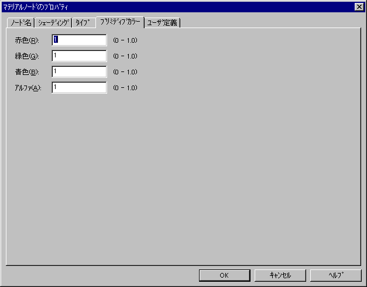

The following tabs are available in the Material node properties:
The "Node name" tab sets the name of the Material node.

The node name is displayed if the node is linked to the Name area. If it is not linked, then "Unknown" is displayed here. To change the node name, edit the node name that is displayed here. If you want to set a new node name for a node that is not linked to the Name area, simply delete "Unknown" and input the desired name. Conversely, if you want to delete the node name, simply delete the name that is displayed here.
The characters that can be used for node names are the ASCII characters "!" (0x21) to "~" (0x7e). Note that the name cannot contain a space nor any Japanese characters.
Use the "Shading tab to specify material shading.

In "Lighting," select one of the following effects of light on the material:
In "Shading" specify the material's shading information by selecting one of the below items:
Finally, in "Texture," select the way to use textures.
Use the "Type" tab to specify the material type.

In "Type," specify one of the following material types:
When "Use the NIFF-dedicated color combiner" is selected, the various NIFF-prescribed flags are set in the items "Color modulation 0" through "Alpha modulation 1." When "Use the NINTENDO64 color combiner" is selected, the flags are selected from any of the NINTENDO64 color combiner input sources.
Use the "Primitive color" tab to specify the material's primitive color settings.
Specify a floating point value of 0 to 1.0 for the Red, Green, Blue and Alpha components of the primitive color of the material.
Use the "User Defined" tab to specify overrefined flags.

The 32-bit data values defined by the user are set using hexadecimal.